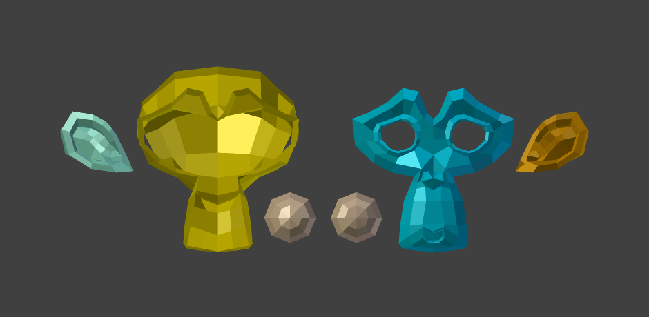

Miscellaneous Editing Tools¶
Sort Elements¶
Reference
| Mode: | Edit Mode |
|---|---|
| Menu: |
This tool (available from the Specials, Vertices, Edges and Faces menus) allows you to reorder the matching selected mesh elements, following various methods. Note that when called from the Specials menu, the affected element types are the same as the active select modes.
- View Z Axis
- Sort along the active view's Z axis, from farthest to nearest by default (use Reverse if you want it the other way).
- View X Axis
- Sort along the active view's X axis, from left to right by default (again, there is the Reverse option).
- Cursor Distance
- Sort from nearest to farthest away from the 3D cursor position (Reverse also available).
- Material
- Sort faces, and faces only, from those having the lowest material's index to those having the highest. Order of faces inside each of those "material groups" remains unchanged. Note that the Reverse option only reverses the order of the materials, not the order of the faces inside them.
- Selected
- Move all selected elements to the beginning (or end, if Reverse enabled), without affecting their relative orders. Warning: This option will also affect unselected elements' indices!
- Randomize
- Randomizes indices of selected elements (without affecting those of unselected ones). The seed option allows you to get another randomization -- the same seed over the same mesh/set of selected elements will always give the same result!
- Reverse
- Simply reverse the order of the selected elements.
Gợi ý
Enabling the Display Indices Option
Type bpy.app.debug = True into the Python Console and a checkbox will appear
in the Properties region under .
Separate¶
Reference
| Mode: | Edit Mode |
|---|---|
| Menu: | |
| Hotkey: | P |
At some point, you will come to a time when you need to cut parts away from a mesh to be separate.
To separate an object, the vertices (or faces) must be selected and then separated, though there are several different ways to do this.

Suzanne dissected neatly.
- Selected
- This option separates the selection to a new object.
- All Loose Parts
- Separates the mesh in its unconnected parts.
- By Material
- Creates separate mesh objects for each material.
Xem thêm